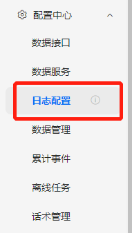
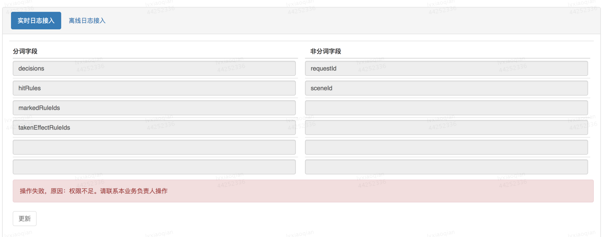
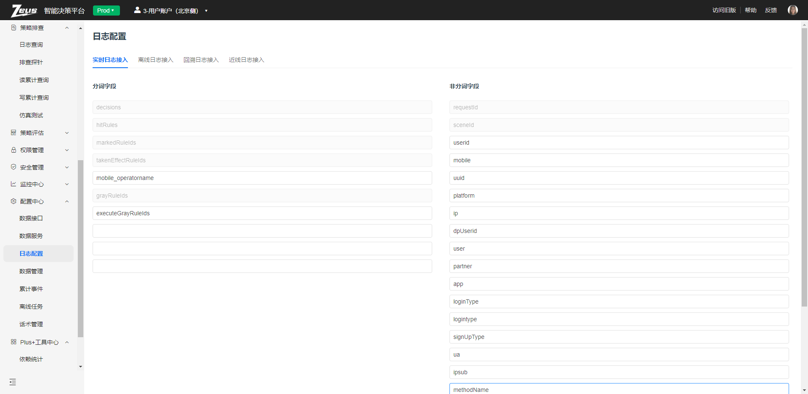

说明：日志配置使用文档
注意：
- 日志配置是指对日志查询条件的配置。
- 日志配置注册或更新之后，最多10分钟后生效，并且按照新增/更新字段来查询，只能查出最新日志，不支持历史日志查询！！！
-
对于日志字段的更新属于高危行为，请谨慎操作。
-
业务负责人查看方法：
-
点击zeus平台最上方的“权限”->“业务管理”，即可根据相关业务查看对应负责人
-
-
目前zeus只支持线上日志的存储、查询。
背景
现阶段一个新的业务接入zeus之后，数据统计功能，即实时日志查询和离线日志查询这两个功能默认是未开通的，需要rd手动在线上数据表中进行配置，整个过程不是自动化的，而且手动操作数据库存在着比较大的安全隐患。综上所述，亟需提供一个前端入口来帮助配置日志字段，这样快速又安全。
解决方案
在zeus前端页面提供一个配置入口，在配置页面分别可以配置相应字段，填写完毕点击注册/更新按钮即可。
使用说明
首先入口如下图所示：

点击进入，如下图所示：

如果出现上述页面，说明您不是该业务的负责人。同样地，为了保证操作安全，只能由业务负责人来配置相关字段。
如果你是该业务的负责人，则会显示如下页面：

接下来您可以根据自己的日志查询需求来配置相关字段即可。
关键点说明
关于分词和非分词字段的说明
分词字段（对应数据库中a_col_x字段）：
- 该字段的值可以包含多个值，以逗号隔开，比如字段poiid的值可以是1,2,3,4
- 对分词字段的搜索逻辑是：以“或”的逻辑来匹配相应分词字段里边的所有分词
- 目前支持10个分词字段
- decisions, hitRules, markedRuleIds, takenEffectRuleIds 为默认字段，不可更改
非分词字段（对应数据库中na_col_xx字段）：
- 与分词字段相对，仅包含一个值，比如userId的值可以是123
- 目前支持20个非分词字段
- requestId, sceneId 为默认字段，不可更改
关于配置生效的说明
- 日志配置注册或更新之后，新的日志数据需等待10分钟才可以正确查询出来。
- 新增的配置字段，只能在后续的日志数据中作为字段查询。
关于配置时间的说明
- 目前日志配置的时间与相应业务的静默期配置保持一致。
关于配置决策理由查询字段的说明
- 若查询日志时需要根据决策理由查询，则需要配置reasonCodes字段，在数据统计-日志配置-分词字段中加入reasonCodes。
关于演练日志的配置
目前尚无界面配置，需要RD手动在数据库中插入一条数据，参考
insert into common_log_config_extra (business_code, business_desc, config_data, extra_info, creator,addtime, modifier, modtime)
values (152, "优选风控","{\"a_col_11\":\"drillRuleEqual\",\"a_col_12\":\"drillRuleLessthan\",\"a_col_13\":\"drillRuleMorethan\",\"a_col_14\":\"drillDecisionEqual\",\"a_col_15\":\"drillDecisionLessthan\",\"a_col_16\":\"drillDecisionMorethan\",\"na_col_21\":\"drillTaskId\"}"
,"","liyi49",1627031580, "liyi49", 1627031580);config_data以及extra_info按照模板填写就行，其他麻烦使用真实数据。